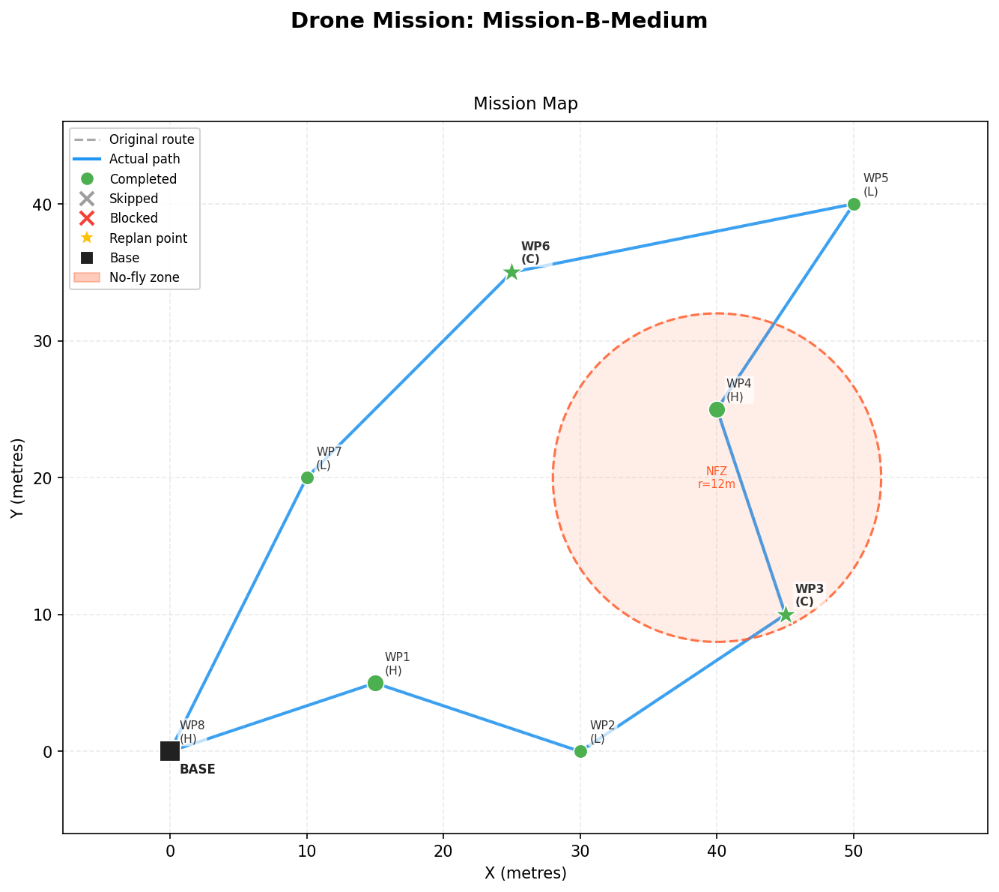
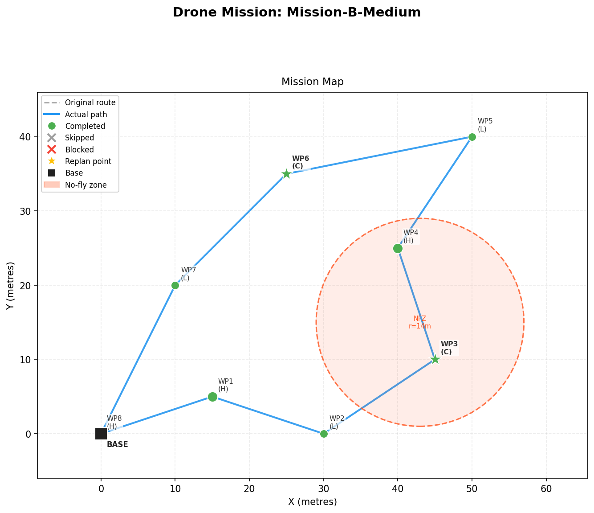

Modern unmanned aerial vehicles (UAVs) execute pre-planned waypoint missions for delivery, surveying and inspection. However, real-world flights regularly encounter unexpected disruptions—sudden battery loss, dynamic no-fly zones, or failed waypoints—that render the original plan infeasible. Traditional rule-based replanners struggle to balance multiple competing constraints (priority, battery, geometry) on the fly.
FlyHigh-AI proposes a hybrid replanning architecture that combines a deterministic 2D drone
simulator, a battery-aware feasibility analyser, and a Large Language Model (LLM) reasoning layer powered by Groq's
llama-3.3-70b-versatile. The LLM is constrained by a strict Pydantic output schema and benefits from
a deterministic fallback planner if the model fails. The system was benchmarked across five scenarios of varying
complexity, achieving a composite score of 0.93/1.0 on the strongest model.
This report details the problem, system design, algorithms, AI integration strategy, implementation, results, and future directions of the FlyHigh-AI project.
The global drone market has grown rapidly across delivery (Amazon Prime Air, Zipline), agriculture, public safety, and infrastructure inspection. A typical commercial drone mission consists of an ordered sequence of waypoints, each with a priority and a task type (delivery, survey, inspect, return-to-base). Drones execute these plans autonomously based on a flight controller’s pre-programmed instructions.
The challenge arises when reality deviates from the plan. Wind gusts can drain batteries faster than expected, new no-fly zones can be issued mid-flight (e.g., due to emergency airspace restrictions), and target waypoints can become inaccessible (locked gate, occupied helipad). When such anomalies occur, the drone must either:
Option 3 is desirable but algorithmically hard: it is a constrained variant of the Travelling Salesman Problem with priority weights and a hard energy budget. Hand-crafted heuristics tend to be brittle.
LLMs have demonstrated strong performance on structured reasoning tasks when paired with explicit constraints and schema validation. The hypothesis behind FlyHigh-AI is that an LLM, given a pre-computed feasibility analysis and a well-engineered prompt, can outperform a fixed heuristic on priority/feasibility trade-offs — without sacrificing safety, because every LLM output is validated by a deterministic verifier.
"Use the LLM for strategy, not arithmetic. Pre-compute every battery cost; let the model decide what matters." — FlyHigh-AI design principle.
Problem: Given a drone with limited battery, an ordered list of priority-tagged waypoints, and a set of in-flight anomalies, produce a new safe and high-utility waypoint plan in real time.
O(n).| Approach | Strengths | Weaknesses |
|---|---|---|
| A* / Dijkstra | Optimal pathfinding | No semantic priority reasoning |
| Genetic Algorithms | Multi-objective optimisation | Slow, hard to tune |
| Reinforcement Learning | Adaptive | Requires extensive training data |
| Hand-coded heuristics | Fast, predictable | Brittle to novel anomalies |
| LLM + verifier (this work) | Flexible reasoning, fast iteration, no training | Needs strong validation layer |
The closest analogues are recent works on LLM-driven robotics (e.g., Google’s SayCan, Microsoft’s PromptCraft for robotics). FlyHigh-AI applies the LLM + structured output + deterministic fallback pattern specifically to UAV replanning.
FlyHigh-AI follows a layered architecture. Each subsystem has a single responsibility and a clean interface, making the system testable and extensible.
main.py orchestrates a full simulation run.flyhigh-AI/
├── main.py # Simulation entry point
├── requirements.txt
├── benchmark_results.csv # Scoring data
├── benchmark_results.png # Bar chart
├── mission_*.png # Run visualizations
└── drone_replanner/
├── sim/ # Simulation subsystem
│ ├── drone.py
│ ├── mission.py
│ ├── anomaly.py
│ └── feasibility.py
├── ai/ # AI replanning subsystem
│ ├── schemas.py
│ ├── prompt.py
│ └── replanner.py
├── viz/visualizer.py
└── benchmark/scorer.py
| Module | Responsibility | Key Class / Function |
|---|---|---|
sim/drone.py | 2D drone state machine, battery drain | Drone, Position |
sim/mission.py | Waypoint list management + state | Mission, Waypoint |
sim/anomaly.py | Inject disruptions into simulation | AnomalyInjector, NoFlyZone |
sim/feasibility.py | Battery feasibility analysis | check_feasibility() |
ai/schemas.py | Strict Pydantic output schema | ReplanDecision |
ai/prompt.py | 10-section structured prompt builder | build_prompt() |
ai/replanner.py | LLM call + retry + fallback | run_replanner() |
viz/visualizer.py | 2D mission map + reasoning trace | render_mission() |
benchmark/scorer.py | Multi-model scoring across scenarios | score_scenario() |
main.py | Simulation orchestration loop | run_simulation() |
The drone simulator uses a simple, calibrated drain model:
drain_percent = (distance_metres / speed_mps) * BATTERY_DRAIN_RATE
= flight_time_seconds * 0.8 % per second
Example: travelling 25 m at 5 m/s ⇒ 5 s × 0.8 = 4 % drain.
function check_feasibility(pos, battery, waypoints, base, speed):
drain_per_m = BATTERY_DRAIN_RATE / speed
available = battery - SAFETY_MARGIN # 5% reserve
cumulative = 0
reachable = []
for wp in waypoints:
leg = distance(prev, wp) * drain_per_m
rtb = distance(wp, base) * drain_per_m
if cumulative + leg + rtb <= available:
cumulative += leg
reachable.append(wp.id)
prev = wp.position
else:
return Result(infeasible_at=wp.id, reachable=reachable)
return Result(feasible=True, reachable=reachable)
Complexity: O(n) where n is the number of remaining waypoints.
function run_replanner(drone, mission, anomalies, feasibility):
prompt = build_prompt(...)
for attempt in 0..MAX_RETRIES:
raw = groq.chat(prompt, temperature=0.2)
try:
decision = ReplanDecision.parse(raw)
decision.validate_against_mission(mission)
return ReplanResult(decision, used_fallback=False)
except ValidationError as err:
prompt += "Your response was invalid: " + err
# All retries failed
return _fallback_replan(drone, mission, feasibility)
function _fallback_replan(drone, mission, feasibility):
candidates = [wp for wp in mission.remaining()
if wp.id in feasibility.reachable
and wp.priority != LOW]
ordered = nearest_neighbour(drone.position, candidates)
skipped = [wp for wp in mission.remaining() if wp.id not in ordered]
return ReplanDecision(new_order=ordered, skipped=skipped)
function inject_no_fly_zone(center, radius):
zone = NoFlyZone(center, radius)
affected = []
for wp in mission.remaining():
if distance(wp.position, center) <= radius:
mission.mark_blocked(wp.id, "inside no-fly zone")
affected.append(wp.id)
return InjectionResult(replan_needed = len(affected) > 0)
Groq’s LPU inference engine delivers extremely low latency (700 ms–2 s) for the
llama-3.3-70b-versatile model. Real-time replanning is only viable when the model responds within a
few seconds; traditional GPU APIs introduce too much delay.
class ReplanDecision(BaseModel):
reasoning: str
new_waypoint_order: list[int]
skipped_waypoints: list[SkippedWaypoint]
confidence: Literal["high", "medium", "low"]
estimated_battery_remaining: float
abort_mission: bool = False
abort_reason: str | None = None
@model_validator(mode="after")
def validate_against_mission(self, mission):
# No blocked waypoints in new order
# Every remaining waypoint either kept OR skipped
# No waypoint in BOTH lists
...
[REACHABLE] or [OUT-OF-RANGE]{
"reasoning": "Battery is critically low. WP3 is LOW priority and adds 6.4% cost. Skip WP3, keep CRITICAL WP2 and HIGH WP4, return via WP5.",
"new_waypoint_order": [2, 4, 5],
"skipped_waypoints": [
{ "waypoint_id": 3, "reason": "Low priority + battery constraint", "priority_acknowledged": true }
],
"confidence": "high",
"estimated_battery_remaining": 12.5,
"abort_mission": false
}
| Category | Technology | Purpose |
|---|---|---|
| Language | Python 3.10+ | Type hints, dataclasses, Pydantic v2 |
| LLM API | Groq SDK (groq≥1.1.0) | Low-latency inference for Llama 3.3 70B |
| Validation | Pydantic 2.x | Strict JSON schema for LLM output |
| Visualization | Matplotlib 3.7+ | 2D mission maps + reasoning panels |
| Data analysis | Pandas 2.x | Benchmark CSV aggregation |
| Version control | Git | Source management |
# Easy mission, no anomalies python main.py --mission easy --no-anomaly # Hard mission with visualization python main.py --mission hard --plot --plot-path output.png # Choose model python main.py --mission medium --model llama-3.1-8b-instant
frozen=True prevents accidental mutation of LLM outputs.if __name__ == "__main__"._extract_json() — handles markdown fences,
brace extraction, and direct JSON.| Module | Approximate LoC |
|---|---|
sim/drone.py | 275 |
sim/mission.py | 340 |
sim/anomaly.py | 445 |
sim/feasibility.py | 235 |
ai/schemas.py | 220 |
ai/prompt.py | 290 |
ai/replanner.py | 365 |
viz/visualizer.py | 175 |
main.py | 360 |
| Total | ≈ 2,705 |
Effective visualization is critical for demonstrating drone behaviour to stakeholders. The
viz/visualizer.py module produces a two-panel image: a 2D mission map (left) and an LLM reasoning
trace (right). Visual elements distinguish completed (green), skipped (grey), and blocked (red) waypoints.


A live console reporter prints status every 5 ticks, with banners for anomaly events and replanning decisions. Sample output:
Tick 12 | pos=(15.0, 5.0) | bat=72.4% | wp=2 (CRITICAL)
[!] Anomaly @ tick 14: BATTERY_DROP severity=HIGH (-30%)
[REPLAN] LLM model=llama-3.3-70b confidence=high
new_order=[2, 4, 5] skipped=[3]
reasoning="Skip WP3 (LOW) to preserve RTB margin"
Tick 20 | pos=(25.5, 8.4) | bat=38.1% | wp=4 (HIGH)
...
>>> MISSION COMPLETE: 4/5 waypoints, 1 skipped, battery remaining 9.2%
The benchmark suite evaluates each LLM across 5 scenarios using 4 metrics: valid JSON, feasible plan, priority respect, and safe return. The composite score is a weighted average (0.25 / 0.35 / 0.25 / 0.15).
| Scenario | Llama 3.3 70B | Llama 3.1 8B |
|---|---|---|
| S1 — Easy + Battery Drop | 1.00 | 1.00 |
| S2 — Easy + No-Fly Zone | 1.00 | 0.85 |
| S3 — Medium + Stacked Anomalies | 0.65 | 0.50 |
| S4 — Medium + Waypoint Failure | 1.00 | 0.90 |
| S5 — Hard + Critical Battery | 1.00 | 0.90 |
| Average | 0.93 | 0.83 |
| Model | Avg latency (ms) | Avg retries | Fallback triggered? |
|---|---|---|---|
| llama-3.3-70b-versatile | ~1,720 | 0.2 | No |
| llama-3.1-8b-instant | ~720 | 0.4 | No |
FlyHigh-AI demonstrates that an LLM, paired with a rigorous validation pipeline and a deterministic fallback, can serve as a robust real-time replanner for autonomous drone missions. The system handled all five benchmark scenarios without ever requiring fallback intervention, achieving a composite score of 0.93 on Llama 3.3 70B. The architectural pattern — LLM for strategic reasoning, code for arithmetic and safety — generalises to other constrained planning domains.
The authors thank the faculty of the School of Computer Science and Engineering, VIT Chennai, for their continuous guidance throughout this project. We also acknowledge Groq Inc. for providing fast LLM inference, and the open source community behind Pydantic, Matplotlib, and Pandas.
End of Report — FlyHigh-AI — Prajul Jain (23BPS1003) & Sakshi Bansal (23BPS1012)